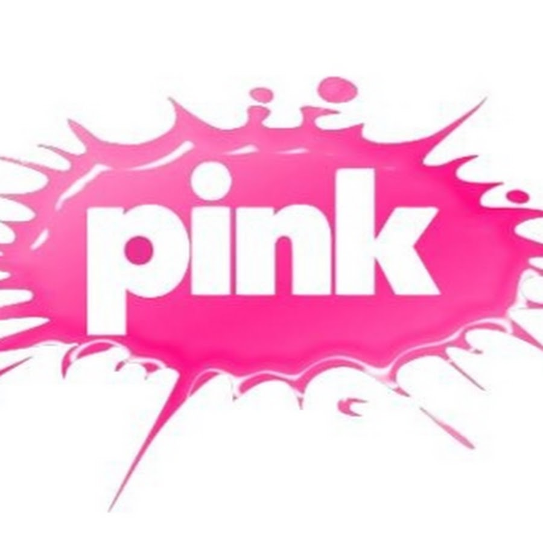

Novokomponovana narodna muzika je naziv za žanr popularne muzike koji je nastao i razvijao se u periodu između šezdesetih i devedesetih godina prošlog veka, na temeljima narodnog melosa, u svim republikama bivše SFRJ izuzev Slovenije.
Izraz „novokomponovana“ je korišten da bi se naglasila razlika u odnosu na izvornu, tradicionalnu narodnu muziku. Iako je u početku postojao izvestan trud da novokomponovana podseća na izvornu po muzičkim formama i tekstovima, taj trud je ubrzo nestao, pa se novokomponovana muzika sve više udaljavala od svojih izvora.
Prema svojim karakteristikama (tiražima, broju i popularnosti medijskih kanala difuzije), predstavlja tipičan fenomen masovne kulture. Međutim, bez obzira na to što se savršeno uklapa u koncepte masovne kulture i zapadne potrošačke formule koji su u SFRJ bili na udaru kritike vladajuće partije i državnih struktura, novokomponovana narodna muzika je zbog velike popularnosti među masama, a verovatno i zbog atributa narodna koji je u komunističkom režimu imao posebno značenje, opstala i napredovala.
Osnovni instrument u novokomponovanoj narodnoj muzici je harmonika bez koje je „narodnjački“ orkestar nezamisliv i koja je svojevrsni zaštitni znak žanra. Ostali instrumenti su u početku bili akustični, ali su ih već sredinom sedamdesetih zamenili električni, pa su obavezni u orkestru postali i električna solo i bas-gitara, a početkom osamdesetih i sintisajzer i ritam mašina.
U muzičkom smislu, novokomponovana narodna muzika ne predstavlja nikakvu vrednost. Odlikuju je varijacije na teme melosa čitavog Balkana, ali i Turske, Bliskog istoka, pa čak i Indije , prilagođene često veoma skromnim vokalnim mogućnostima izvođača, kao i neumereno korišćenje efekata.
Tekstovi su najčešće banalni i obiluju patetikom. Uglavnom se bave tugom za izgubljenom ljubavlju, preljubom, jadikovanjem nad teškim životom, žaljenjem za izgubljenom mladošću, nostalgijom prema napuštenom rodnom kraju, ali i motivima iz svakodnevnog života, uglavnom sa sela. Često su na granici lascivnosti. Tekstopiscima je u najvećem broju slučajeva bitna samo rima, pa su zbog nje skloni da zanemare gramatiku, a neretko i logiku. Ovakvi tekstovi su zbog toga veoma često predmet podsmeha u medijima i među onima koji ne vole ovu vrstu muzike, ali sudeći po njihovom broju i popularnosti, može se zaključiti da to ne pogađa ni autore, ni izvođače, a ni publiku koja ih sluša.

TV Pink - leglo turbo folka
Devedesete godine - turbo folk
Nastao je u Jugoslaviji krajem osamdesetih godina pošlog veka, a vrhunac popularnosti dostigao je devedesetih, zahvaljujući agresivnoj promociji brojnih radio stanica i televizija Palma i Pink, koje su emitovale skoro isključivo ovu vrstu muzike. Odlikuju ga brzi ritmovi i isključivo električni instrumenti, sa obaveznim sintisajzerom, uz obilje efekata. Iz ovog perioda potiče izraz „šabanajzer“, koji u žargonu označava sintisajzer koji se koristi nevešto ili uz neumerenu primenu efekata. Tekstovi se uklapaju u opšti obrazac novokomponovane muzike. Mnogi protivnici turbo-folka ga smatraju paradigmom supkulture devedesetih i podilaženja niskom ukusu masa.
Velika većina izvođačica ove vrste muzike je ostala zapamćena po neukusno oskudnoj garderobi, iznošenju privatnog života u javnosti, čestim skandalima i ljubavnim vezama sa pripadnicima podzemlja.
Obožavaoci ove vrste muzike gajili su sopstveni stil oblačenja koji se sastojao od obaveznih patika Najki „er maks“, masivnih zlatnih ogrlica i majica upasanih u farmerice marke „Dizel“, po kojima su prozvani „dizelaši“. Turbo-folk je imao snažan uticaj na muziku drugih zemalja, poput Bugarske (čalga) i Grčke (laiki). Iz njega su u Srbiji nastali pop-folk i tehno-folk.
Period posle 2000: pop folk i tehno folk
Muzički pravci nastali u Srbiji posle 2000, na koje je najveći uticaj imao turbo-folk. Ovo su u stvari varijante turbo-folka, ali sa većim uticajem popa, tehno i elektronske muzike. Iako je primetan znatan otklon u odnosu na muziku ranijih godina i sve veće okretanje muzičkim tokovima zapada, tekstovi su ostali prepoznatljivi kao „narodnjački“, a u muzici se provlače pseudofolk motivi. Na albumima pojedinih popularnih pevačica devedesetih (Seka Aleksić, Svetlana Ražnatović, Dragana Mirković), danas dominira pop zvuk, dok se drugi, poput Jelene Karleuše, okreću elektronskoj muzici.